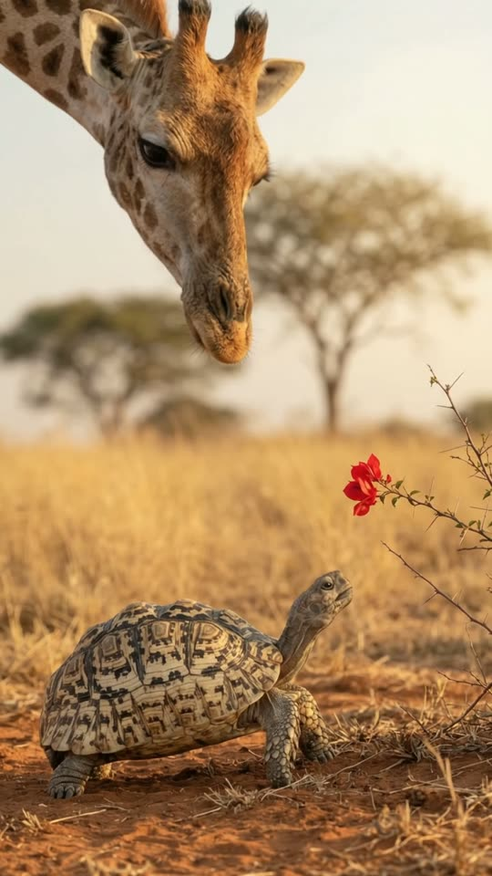
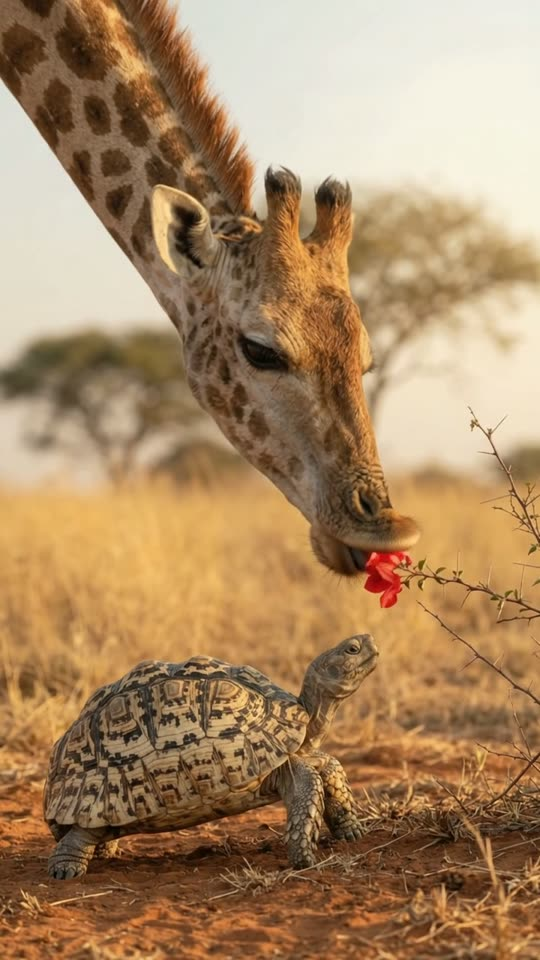
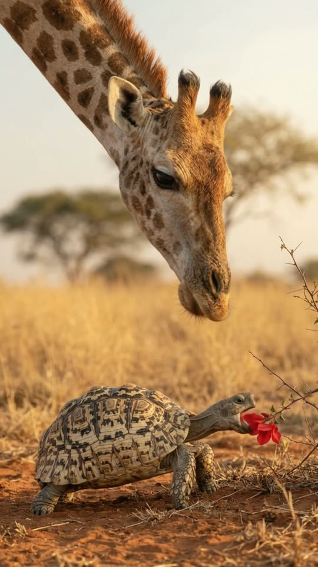
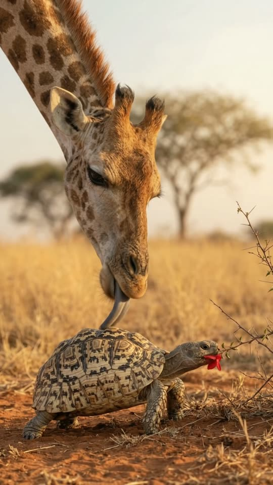

Free prompt pack
He couldn't reach it.She could.
A tortoise stretches for a red flower on a branch just out of reach. A giraffe lowers her head, picks it, and drops it right at his feet. He eats it. She says you're welcome with her tongue. One still image and one prompt, in one take.
Both prompts, in the order I ran them. Drag the giraffe's head down to the flower, then down to the tortoise, to reveal each prompt. Tap the grass and a flower blooms.
The first frame
Tallest above, smallest below. This image is frame one: a giraffe's neck curving down from the top of a vertical frame, her head right above a small leopard tortoise who can't reach a red flower on a thorny branch.
Watch out
Only her neck and head are in the picture. The vertical frame is exactly that shape, and the model never has to work out how a giraffe crouches.

The prompt 116 words
Real wildlife photo taken with a long lens, warm late-afternoon savanna light. At the bottom of the picture a small leopard tortoise stands on dry red earth, its neck stretched up toward a bright red flower on a thin thorny branch just out of its reach: a high domed shell patterned in cream and dark brown, scaly grey legs. From the top of the frame a giraffe's long neck curves down, its head hanging right above the tortoise, looking at it: tan coat with large chestnut patches, two small furry ossicones, big dark eyes with long lashes, soft whiskered lips. Golden dry grass and a blurred acacia behind. Shallow depth of field, natural colour, sharp detail.
Pick, drop, lick
Ten seconds, locked off on a long lens. Add the image as the reference, set 10 s, 9:16, 720p and audio on, and paste the prompt whole. This is the second version.
- 0–2 scan't reach it
- 2–5 spicked and dropped
- 5–6.5 she eats
- 6.5–10 sthe lick
Watch out
Look at the first frame you got before you write the video prompt, and copy where things are. My first try said the branch came from the left; the image had it on the right, and the model added a second branch to please both.
Fragments



The prompt 1030 words
FORMAT Real wildlife video filmed with a long lens, seen as the finished exported video file: the full picture edge to edge, nothing on top of it. Whatever records the picture is never in frame. One continuous take in real time, no cuts. Vertical frame. The video runs at 24 fps. No frame is repeated. Real time, 1x speed, never slow motion. SCENE On the savanna, a small tortoise stretches its neck toward a red flower it can't reach. A giraffe lowers its head, picks the flower off the branch with its lips and drops it right in front of the tortoise, which starts eating it. Then the giraffe's long purple tongue comes out and gives the tortoise's shell one big lick; the tortoise pulls its head in, flower and all, and pops it back out still chewing. The giraffe's head is already hanging above the tortoise in the first frame. The take ends with the tortoise chewing and the giraffe blinking above it. REFERENCE IMAGE Use it for the tortoise, the giraffe, the flower, the branch, the earth, the grass, the acacia and the light, and for where each of them is: the branch comes in from frame-right and the tortoise faces frame-right, exactly as in the image. Everything matches it exactly, zero drift, no smoothing. The movement is described below. THE TORTOISE One real leopard tortoise, about 30 cm long: a high domed shell patterned in cream and dark brown, scaly grey legs, a small blunt head with a hooked beak. It moves like a real tortoise: slow, deliberate, its neck stretching and pulling back; it never walks away during the take. THE GIRAFFE One real giraffe, only its long neck and head in the frame, coming down from the top edge: tan coat with large chestnut patches, two small furry ossicones, big dark eyes with long lashes, soft whiskered lips, a long dark blue-purple tongue. It moves like a real giraffe: slow, smooth, gentle; its lips grip, its tongue curls. Its body and legs stay out of the frame the whole take. LOCATION MAP We are 12 m away, low, looking at them side-on across dry red earth. The tortoise stands at the bottom of the frame, facing frame-right. One thin thorny branch with one bright red flower reaches in from the right edge of the frame, the flower 15 cm above the tortoise's nose. The giraffe's neck comes down from the top-left of the frame and its head hangs just above the tortoise's head. Golden dry grass and a blurred acacia behind. This is the only branch in the picture: once its flower is picked it stays bare, and no other branch or flower ever enters the frame. FIRST FRAME The tortoise at x 15-70%, y 70-94%, facing frame-right, its head at x 62-72%, y 62-70%, neck stretched up; the red flower at x 70-78%, y 57-63% on the branch that comes in from the right edge at x 78-100%, y 48-70%; the giraffe's neck from the top-left corner down to its head at x 55-80%, y 12-56%, looking down at the tortoise. Instant read: a giraffe watching a tortoise that can't reach a flower. No delayed reveal. CAMERA Locked off: a still frame with only the faintest natural movement of a long lens. It never pans, never tilts up to the giraffe's body, never zooms, never cuts. ACTION TIMING 0–2.0 s — The tortoise stretches its neck up toward the red flower and opens its beak, but can't reach it; it tries once more; the giraffe watches from above, ears turning. 2.0–3.5 s — The giraffe lowers its head, closes its lips around the flower and pulls it off the branch; the branch springs back. 3.5–5.0 s — It lowers the flower and drops it on the ground right in front of the tortoise. 5.0–6.5 s — The tortoise bites the flower and starts chewing, red petals sticking out of its beak. 6.5–8.0 s — The giraffe lowers its head until its chin is just above the tortoise's shell, then its long dark purple tongue curls out and licks the top of the shell once, from back to front, leaving it wet and shiny. 8.0–10 s — The tortoise pulls its head into its shell, the flower still sticking out of the opening, then pushes its head back out, still chewing; the giraffe blinks its long lashes. Hold to the last frame. PHYSICS AND SCALE Real size: the tortoise is about 30 cm long, the giraffe's head about 60 cm long, the flower about 8 cm across. The giraffe's movements are slow and smooth; its tongue is long and flexible but real, never cartoonish. The shell stays rigid; only the head and legs of the tortoise move. One tortoise, one giraffe, one flower. Nothing morphs. NO FULL-FRAME EVENTS Nothing fills the frame: the tortoise, the giraffe's head and the ground stay in view in every frame. The giraffe's head never covers the tortoise completely. LIGHTING Warm late-afternoon sun from frame-right, low and golden; soft highlights on the shell and the giraffe's coat; the red flower bright but natural. AUDIO No music, no score, no narration, no subtitles. Quiet savanna sounds: insects, a light breeze in the dry grass, a soft snap as the flower comes off, the crunch of the tortoise chewing, a wet slurp of the lick, a soft snort from the giraffe. No words. LOOK Real wildlife documentary footage shot on a long lens, seen as the finished exported file: shallow depth of field, crisp shell and coat detail, natural colour, no film grain, no lens flare, no slow motion, never CGI, never a cartoon. No camera app interface: no shutter button, no gallery thumbnail, no record button, no icons, no timer, no recording dot, no frame lines. POSITIVE LOCKS One tortoise, one giraffe, one branch, one red flower. No second branch and no second flower ever appear. Only the giraffe's neck and head are in frame. No people, no vehicles. No captions, no subtitles, no on-screen text, no watermark, no logos, nothing on top of the picture. ONE TORTOISE. ONE GIRAFFE. ONE BRANCH. NO CUTS. NO ZOOM. NO SLOW MOTION. NO MUSIC.
Rule 01
Tallest and smallest
Two real animals from opposite ends of the scale, one small kindness and a twist. That's the shape of most of my reels that went past 25K.
Rule 02
Text and image must agree
When the prompt and the first frame disagree, the model doesn't pick one. It gives you both. Copy the image's layout into the text.
Rule 03
Say how many
One branch, one flower. Counting the props closes the door on the model adding more of them halfway through.
That's the whole build
Now go helpsomeone shorter.
If yours works, send it over. I read every DM and the good ones end up on the account.
@martiiifons